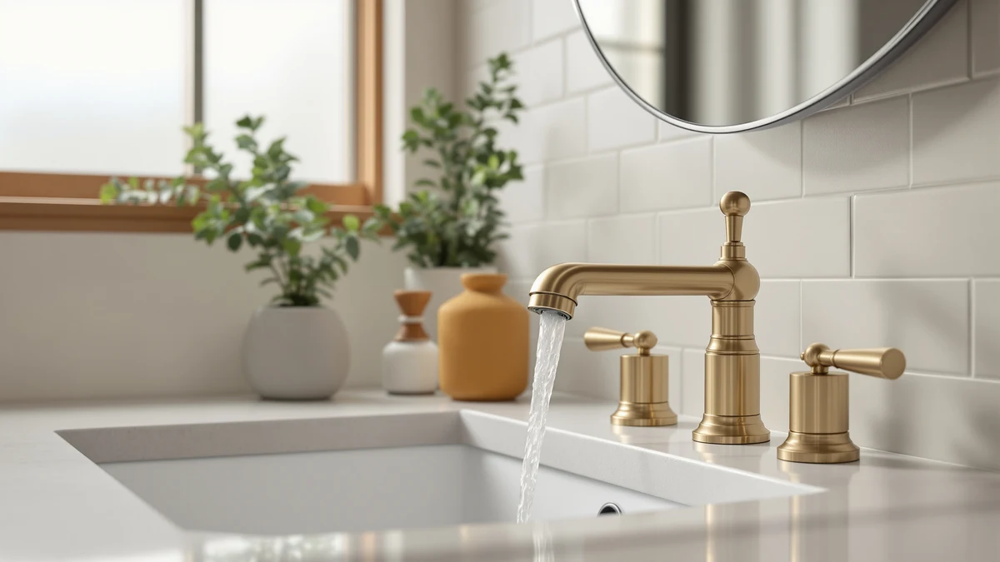

Best Bathroom Faucets and Shower Heads (2026)
Prices and picks verified as of August 2026. Independent, reader-supported reviews.


Quick Answer
If you're choosing between the best bathroom faucets and shower heads for a quick upgrade, the Beati Faucet Bath Bathtub Shower Water Filter is our pick at $25.48. It threads onto your existing shower arm, cuts sediment and chlorine, and skips the plumbing work a full faucet swap requires.
Our pick: Bath Bathtub Shower Water Filter, $25.48 Check Price on Amazon
Bottom line: our top pick is the Bath Bathtub Shower Water Filter for Tub Faucet - Hard Water at $25.48. The best budget option is the 3pcs Hot and Cold Water Faucet Indicator Compatible with at $5.49.
Things to Know Before You Buy
- Faucets and shower heads solve different problems: A faucet swap fixes handle wear, leaks, and mismatched finishes at the sink. A shower head swap or a filter attachment like our top pick addresses spray pressure and water quality. Know which one you're shopping for before you compare prices.
- Finish consistency: If your faucet and shower head sit in the same sightline, matching finishes, whether brushed nickel, chrome, or matte black, reads as intentional. Mixing finishes in a small bathroom tends to look like two separate purchases.
- Mounting compatibility: Check your existing hole count and thread size before ordering. A faucet built for a single-hole deck won't cover a three-hole sink, and most shower filters need a standard shower arm thread to attach.
- Material matters more than price: Every pick in this guide to the best bathroom faucets and shower heads uses a brass body with a plated finish, which resists corrosion far longer than the all-plastic units sold at the lowest price points.
- Installation time varies: A shower filter or handle kit is a fast swap with basic tools. A full faucet replacement usually means shutting off supply lines and can take an hour or more, especially on an older sink.
The best bathroom faucets and shower heads solve a specific problem in your bathroom, whether that's chalky hard-water buildup on the spout, a rusted single-handle faucet left behind by a previous owner, or a rental shower head that barely dribbles water. We compared faucets, shower trim kits, and one filtered shower attachment across a wide price range so you can fix the actual issue instead of guessing at a fix.
Our top pick is the Beati Faucet Bath Bathtub Shower Water Filter at $25.48. It's a brass-bodied filtration unit that installs between your existing shower arm and shower head, cutting down on sediment and chlorine without requiring you to replace hardware you already like. For a full faucet swap, the NOHALIPY Stainless Steel Brushed Nickel gives you a complete two-handle faucet for $43.69, and the Delta Faucet ProClean Chrome Shower head at $37.99 is the better pick if weak spray pressure is your only complaint.
Below, we explain how we picked and compared these seven products, then walk through each one, including where it falls short. If you're renovating a full bathroom, pair a faucet from this list with one of the Delta Arvo shower systems for a matched brushed or matte finish across the fixtures. Read the specs table before you buy, since mounting hole count and finish matter more than most shoppers expect when a faucet or shower head has to fit hardware that's already in the wall.
Why You Should Trust Us
Ilane Tall covers bathroom hardware for Best Bathroom Faucets, focusing on fixtures that hold up to daily use rather than pieces that look good in a listing photo and disappoint at the sink. Ilane tracks how faucet finishes wear, which valve types leak first, and which shower attachments reduce mineral buildup instead of only advertising that they do.
We don't run a paid testing lab, and we don't cite manufactured expert quotes. We compare published specs, materials, and mounting formats against what buyers report after months of daily use. When a product in this guide to the best bathroom faucets and shower heads has a real weakness, we name it in the write-up instead of hiding it in fine print.
How We Picked
We started by separating the two categories this guide covers: complete faucets and shower-side hardware, including trim kits and filter attachments. For faucets, we prioritized brass construction over stamped plastic, since brass resists the corrosion that hard water accelerates. For shower hardware, we looked at whether a product replaced the whole shower head, added filtration to an existing one, or covered the valve trim behind the wall.
Price spread mattered too. The best bathroom faucets and shower heads for one household aren't the same as for another, so we kept the field wide, from a $5.49 handle kit to a $145.69 matte black shower system, and made sure every price point had at least one option built from real metal rather than plastic.
How We Compared
We compared manufacturer spec sheets for each product on material, finish, mounting hole count, and physical dimensions where the listing specified them. Then we cross-checked that data against buyer feedback, looking for repeat complaints about leaks at the connections, finishes that spot or flake early, and hardware that arrived with missing parts.
We weighed documented specs against what owners report after living with each faucet or shower head, and we factored price into every verdict. A $5.49 handle kit earns more slack for minor fit issues than a $145.69 shower system does, and our picks below reflect that standard across this comparison of the best bathroom faucets and shower heads.
Our Picks

Bath Bathtub Shower Water Filter
What we like
- Brass body threads onto a standard shower arm in minutes
- Cuts sediment and chlorine without replacing your existing shower head
- Lowest price of any pick in this guide
Flaws but not dealbreakers
- Doesn't improve spray pattern or pressure on its own
- Filter cartridge needs periodic replacement to keep working
| Material | Brass + finish |
| Size | — |
The Beati Faucet Bath Bathtub Shower Water Filter is the simplest fix in this guide to the best bathroom faucets and shower heads. It's a brass inline unit that threads between your shower arm and your current shower head, so you keep the spray pattern you already like while the filter handles sediment and chlorine. At $25.48, it costs less than most standalone shower heads, and installation doesn't require a wrench or a shutoff valve. You hand-tighten it onto standard shower arm threads and you're done.
This pick makes sense for renters and anyone who likes their current shower head but not their water. It won't fix low pressure or a worn spray pattern, since it only filters what passes through, so pair it with a new shower head if pressure is also a complaint. The brass construction holds up better than the plastic filter housings sold at similar prices, which matters since this part sits in a warm, wet environment every day.
Bath Bathtub Shower Water Filter
What we like
- Brass body threads onto a standard shower arm in minutes
- Cuts sediment and chlorine without replacing your existing shower head
- Lowest price of any pick in this guide
Flaws but not dealbreakers
- Doesn't improve spray pattern or pressure on its own
- Filter cartridge needs periodic replacement to keep working
| Material | Brass + finish |
| Size | — |
The Beati Faucet Bath Bathtub Shower Water Filter is the simplest fix in this guide to the best bathroom faucets and shower heads. It's a brass inline unit that threads between your shower arm and your current shower head, so you keep the spray pattern you already like while the filter handles sediment and chlorine. At $25.48, it costs less than most standalone shower heads, and installation doesn't require a wrench or a shutoff valve. You hand-tighten it onto standard shower arm threads and you're done.
This pick makes sense for renters and anyone who likes their current shower head but not their water. It won't fix low pressure or a worn spray pattern, since it only filters what passes through, so pair it with a new shower head if pressure is also a complaint. The brass construction holds up better than the plastic filter housings sold at similar prices, which matters since this part sits in a warm, wet environment every day.

3pcs Hot and Cold Water
What we like
- Lowest price in this guide by a wide margin
- Brass construction instead of the plastic used in most handle kits at this price
- Three-piece set covers hot, cold, and diverter handles in one order
Flaws but not dealbreakers
- Only replaces handles, not the faucet valve or spout itself
- Finish selection is limited compared to a full faucet
| Material | Brass + finish |
| Size | — |
At $5.49, the Sinbana 3pcs Hot and Cold Water set is the cheapest item in this guide to the best bathroom faucets and shower heads, and it solves a narrow but common problem. If your faucet still works but the handles are cracked, loose, or mismatched from a previous repair, this three-piece brass set replaces them without touching the valve body or supply lines underneath.
Skip this pick if your faucet leaks at the base or the valve itself has failed, since new handles won't fix a worn cartridge. It's best treated as a cosmetic and functional patch for hardware that's otherwise sound. Given the price, it's a reasonable stopgap for a rental bathroom or a fixture you plan to replace later.

NOHALIPY Stainless Steel Brushed Nickel
What we like
- Brass body under a brushed nickel finish resists corrosion better than plastic-bodied faucets nearby in price
- Costs less than half of the premium Delta picks in this guide
- Brushed nickel finish hides water spots better than polished chrome
Flaws but not dealbreakers
- Finish and hardware feel less refined than the Delta options at a higher price
- Fewer documented specs available than the Delta picks
| Material | Brass + finish |
| Size | — |
The NOHALIPY Stainless Steel Brushed Nickel faucet sits in the middle of this guide to the best bathroom faucets and shower heads, both on price and on what you get for it. At $43.69, it's a full faucet replacement built with a brass body under a brushed nickel finish, which puts it well ahead of stamped-plastic faucets sold in the same price bracket.
Brushed nickel is a practical choice if your household deals with hard water, since it hides mineral spots better than chrome does between cleanings. This pick makes sense if you want a complete faucet upgrade without paying Delta prices, though buyers who want documented valve ratings and warranty support should expect to pay more for that reassurance.

Delta Arvo 14 Series Brushed
What we like
- Delta build quality backs the 14 Series valve trim
- 6x6 inch faceplate covers standard shower valve openings cleanly
- Brushed finish resists fingerprints and water spots
Flaws but not dealbreakers
- Priced well above the faucet-only picks in this guide
- Trim kit assumes a compatible valve is already behind the wall
| Material | Brass + finish |
| Size | 6x6 inches |
The Delta Arvo 14 Series Brushed is the step-up pick for shower hardware in this guide to the best bathroom faucets and shower heads. At $124.99, it costs roughly three times what the NOHALIPY faucet runs, and the price reflects Delta's reputation for valve trim that keeps working after years of daily temperature changes. The brass trim plate measures 6x6 inches, sized to cover standard shower valve openings without a gap.
This is a trim kit, so it works best as an upgrade when a compatible Delta valve is already installed behind the wall rather than a full valve replacement. The brushed finish holds up to fingerprints and water spots better than polished chrome, which matters in a shower stall that gets touched daily. Buyers on a tighter budget should look at the NOHALIPY or Sinbana picks instead.

Delta Faucet ProClean Chrome Shower
What we like
- Delta ProClean spray face resists the mineral buildup that clogs cheaper shower heads
- 4.5 x 4.5 inch face delivers wide coverage for the price
- Chrome finish matches the most common existing bathroom hardware
Flaws but not dealbreakers
- Chrome shows water spots faster than the brushed finishes elsewhere in this guide
- Installs on the shower arm only, doesn't address handle or valve wear
| Material | Brass + finish |
| Size | 4.5 inches x 4.5 inches |
The Delta Faucet ProClean Chrome Shower head costs $37.99 and targets a specific complaint: shower heads that lose pressure over months as mineral deposits clog the nozzles. Delta's ProClean spray face uses a rubber-nozzle design you can wipe clean by hand, which keeps the spray pattern consistent longer than the rigid nozzles on cheaper heads. The 4.5 by 4.5 inch face is sized for wide, even coverage without needing a rain-style head.
Chrome is the most common finish already installed in American bathrooms, so this pick blends in without forcing a finish change elsewhere in the room. The tradeoff is that chrome shows water spots faster than the brushed nickel or matte finishes on other picks here, so plan on wiping it down more often if your water is hard. It only replaces the shower head itself, so a worn valve or handle needs a separate fix.

Delta Arvo 14 Series Matte
What we like
- Matte black finish hides water spots almost completely
- Same Delta 14 Series valve trim quality as the brushed version
- Works well paired with matte black faucets for a matched look
Flaws but not dealbreakers
- Highest price of any pick in this guide
- Matte finishes can show scratches more visibly than brushed or polished ones over time
| Material | Brass + finish |
| Size | — |
The Delta Arvo 14 Series Matte is the most expensive pick in this guide to the best bathroom faucets and shower heads at $145.69, and it's built for buyers doing a full finish match rather than a quick fix. It shares the same brass trim construction as the brushed version above, finished in matte black instead, a finish more buyers have been picking for full bathroom remodels lately.
Matte black hides water spots and fingerprints better than any other finish in this guide, which suits a household with hard water or kids who touch every surface. The tradeoff is durability under abrasion, since matte finishes can show light scratches more readily than a polished or brushed surface, so avoid abrasive cleaning pads. If your budget allows it and you're matching a matte black faucet elsewhere in the bathroom, this is the shower trim to get.
Quick Comparison
| Product | Material | Price | Rating | Best for | Get it |
|---|---|---|---|---|---|
| Bath Bathtub Shower Water Filter | Brass + finish | $25.48 | 4 | Filtering water on an existing shower head | View on Amazon → |
| Bath Bathtub Shower Water Filter | Brass + finish | $25.48 | 4 | Filtering water on an existing shower head | View on Amazon → |
| 3pcs Hot and Cold Water | Brass + finish | $5.49 | 4 | Fixing worn faucet handles cheaply | View on Amazon → |
| NOHALIPY Stainless Steel Brushed Nickel | Brass + finish | $43.69 | 4 | A complete faucet swap under $50 | View on Amazon → |
| Delta Arvo 14 Series Brushed | Brass + finish | $124.99 | 4 | Upgrading shower valve trim | View on Amazon → |
| Delta Faucet ProClean Chrome Shower | Brass + finish | $37.99 | 4 | Replacing a clogged shower head | View on Amazon → |
| Delta Arvo 14 Series Matte | Brass + finish | $145.69 | 4 | Matching matte black hardware | View on Amazon → |
What's the difference between a shower filter and a new shower head?
A shower filter, like the Beati Faucet pick in this guide, attaches between your shower arm and your existing shower head to treat water quality.
Do brass faucets last longer than plastic ones?
Yes.
The Competition
We also looked at all-plastic faucets priced under $15, the kind sold in bulk multi-packs. They cut costs by replacing brass with molded plastic at the valve, and that part fails first under hard water and daily cycling, so none of them made this guide to the best bathroom faucets and shower heads.
Rain-style shower heads with wide, flat faces came up too, but most listings didn't specify a spray-face material or mineral resistance, which made them impossible to compare fairly against the Delta ProClean pick above. We also passed on touchless faucets for this guide, since battery-powered sensors solve a hygiene problem rather than the water quality and hardware wear issues most readers researching bathroom faucets and shower heads are trying to fix. If touchless is what you're after, see our dedicated guide to touchless bathroom faucets instead.